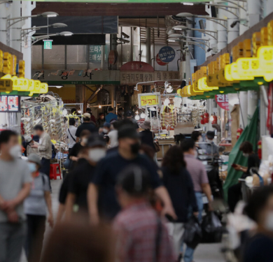
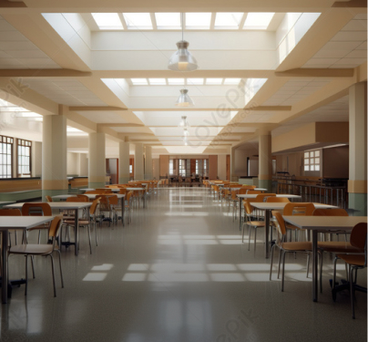
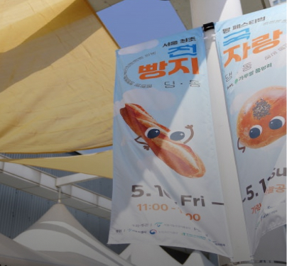
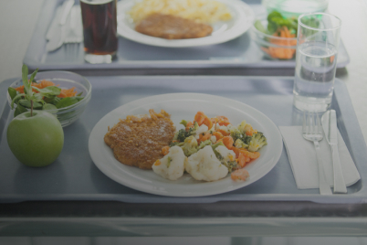
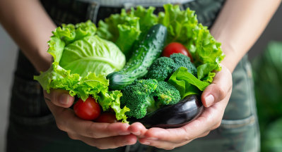

Go to main text
Key Business
Overview

Management and Operation of
Public Wholesale Markets

School Meal
Program

Garak Mall Landmark
Development Project

Dundeun Meal Project
Garak Mall Management
and Operation

Origin Labeling and Eco-Friendly
Agricultural Products
Generation and Dissemination of Wholesale
and Retail Distribution Information
Digital Transformation of
Wholesale Markets
Agro-Fisheries Food
Safety Management